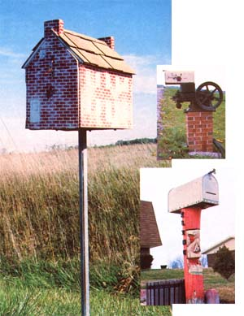
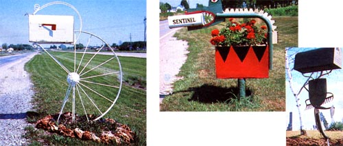

What's up on the road ahead? It's not a bird, it's not a plane, it's one more example of . . .
Perhaps you've given it little thought, but innumerable roadside mailboxes in rural America stand as commendable testimonies of very creative recycling! Why, just look at the pictures here, and you'll see how easy it is for items once deemed "useless junk" to be turned into examples of expressive individualism by (no doubt) ecologically minded citizens!
If you'd like to join the swelling throng of this waste-reducing movement, just keel in mind these few rules. First off, your "eco-box" should sit 3-1/2 to 4 feet from the ground. Legally speaking, the letter holder itself has to be "government ap- ; proved" for sturdiness, water tightness, etc. (in other words, you're supposed to buy not make-one). But you can build around I that certified container just about any kind of support structure you please . . . provided that your mail carrier can get to the box without having to reach far enough to aggravate his or her bursitis.
And that, fellow postal patron, is all there is to it. So remember, you, too, can do your part to preserve our environment (or, at least, its man-made leftovers). All you have ` to do is let yourself get stricken with . . . mailbox mania!
|
 |
 |
|